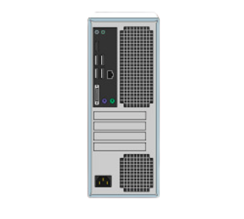

Take a look at the front and back of your computer case and count the number of buttons, ports, and slots you see. Now look at your monitor and count any you find there. You probably counted at least 10, and maybe a lot more.
Each computer is different, so the buttons, ports, and sockets will vary from computer to computer. However, there are certain ones you can expect to find on most desktop computers. Learning how these ports are used will help whenever you need to connect something to your computer, like a new printer, keyboard, or mouse.
Back of a computer case
The back of a computer case has connection ports that are made to fit specific devices. The placement will vary from computer to computer, and many companies have their own special connectors for specific devices. Some of the ports may be color coded to help you determine which port is used with a particular device.
Click the buttons in the interactive below to become familiar with the back of a computer.

Other types of ports
There are many other types of ports, such as FireWire, Thunderbolt, and HDMI. If your computer has ports you don't recognize, you should consult your manual for more information.